Te Araroa
The length of New Zealand, Cape Reinga down to Bluff.
Te Araroa runs 3,000 km through New Zealand and finishes at Bluff. The first landmark is Cape Reinga Lighthouse. At 5,000 steps a day it's about 2.3 years of the walking you do anyway. All 76 landmarks are below, in walking order, with a photograph and the story of the place.
- 3,000km end to end
- 76landmarks
- 2.3 yearsat 5,000 steps a day
- Blufffinishes at

The landmarks of Te Araroa
76 landmarks, in walking order. Each photograph is by the person credited beneath it, used as they licensed it.
-
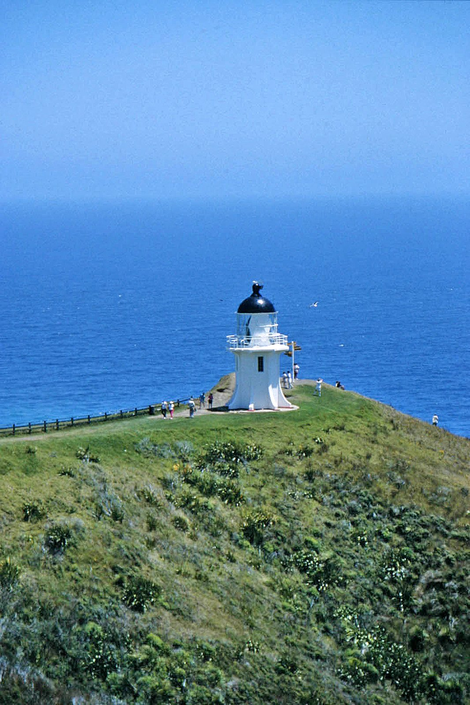
Photo: W. Bulach · Wikimedia Commons, CC BY-SA 4.0 Cape Reinga Lighthouse
Two oceans meet here in a churning white seam, the Tasman colliding with the Pacific off the windswept tip of the North Island. To Māori this is Te Rerenga Wairua, the leaping place where spirits depart for the homeland of Hawaiki. From beneath the lighthouse, three thousand kilometres of beaches, forests, rivers and alpine passes run all the way to Bluff.
-
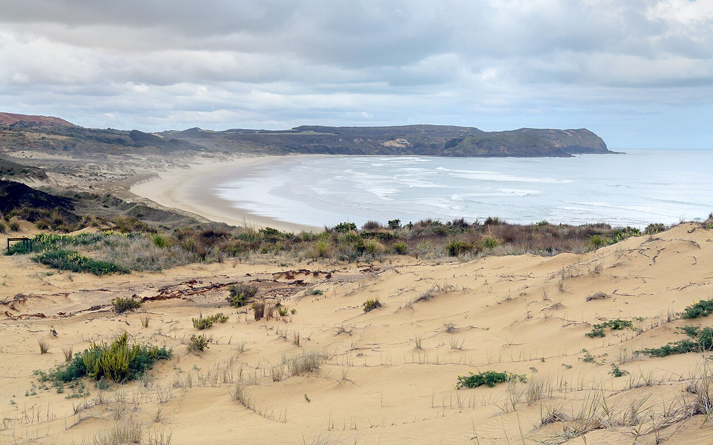
Photo: ShakyIsles · Wikimedia Commons, CC BY-SA 4.0 Twilight Beach
The track spills off the Cape Reinga headland and down onto Twilight Beach, the first open sand on the long walk south. A small campsite hides behind the dunes, sheltered from the wind that scours this coast almost without pause. It is the traditional first night for southbound walkers, close enough to the cape to still hear the two oceans grinding together.
-
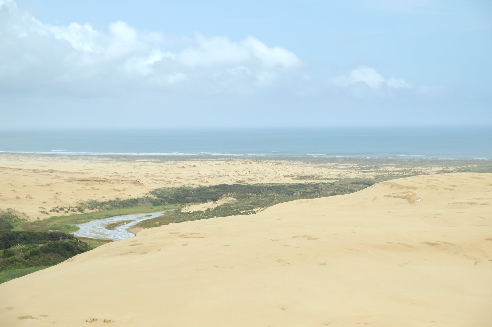
Photo: Pseudopanax at English Wikipedia · Wikimedia Commons, Public domain The Bluff (Te Paki Stream mouth)
A dark headland of rock marks The Bluff, where Te Paki Stream pours out of the towering dunes and across the beach into the Tasman. Buses unload day-trippers here to sandboard the giant sandhills, one of the few crowds on this coast. The stream is the official inland access, a soft braid of freshwater that leads up into the dune desert before the long flat road of sand ahead.
-
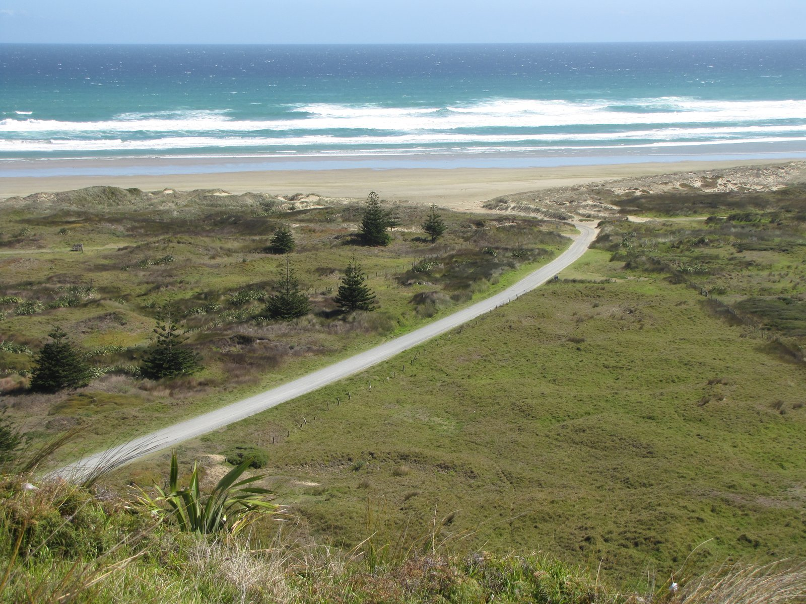
Photo: User:Gadfium · Wikimedia Commons, Public domain Hukatere
Roughly halfway down the great beach lies Hukatere, a low point where a track climbs off the sand and over the dunes to the inland road. There is little here but a lonely access way and the endless hiss of surf, yet walkers know it as a waypoint and a chance to bail to the road. The Māori name speaks of the foam that races up this shore, where sand and sky blur into one.
-
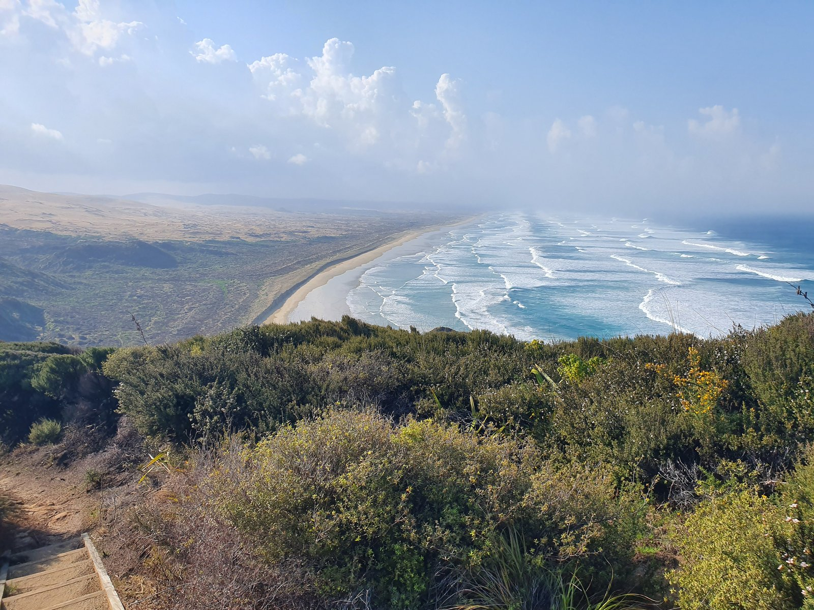
Photo: ShakyIsles · Wikimedia Commons, CC BY-SA 4.0 Ninety Mile Beach
Firm sand runs unbroken for some eighty-eight kilometres south toward Ahipara, an endless ribbon of coast. Dunes shimmer to one side and the Tasman surf hisses on the other, and the horizon never seems to come closer. Despite the name it is closer to fifty-five miles, though on foot it feels like every one of the ninety.
-
Waipapakauri Ramp
Cars and the odd tour bus rumble down the ramp at Waipapakauri, the main vehicle access onto Ninety Mile Beach and the first hint of civilisation in days. A holiday park and store sit a short walk inland. For decades this beach doubled as a racetrack and even an airstrip for the early trans-Tasman flights, before the final push to Ahipara.
-
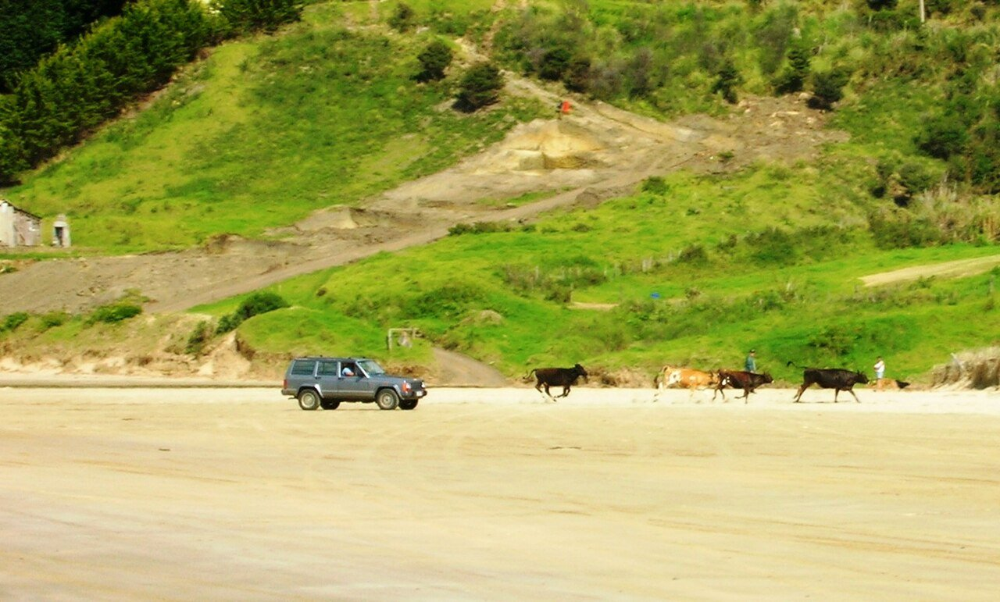
Photo: brewbooks from near Seattle, USA · Wikimedia Commons, CC BY-SA 2.0 Ahipara lookout (Shipwreck Bay end)
At last the long beach curves and ends, and the climb to the headland above Shipwreck Bay begins, where Ninety Mile Beach gives way to Ahipara proper. From up here the whole dead-straight ribbon of sand runs back to its vanishing point. The bay below earned its name from the timbers of old wrecks that still surface at low tide, where the road and the rest of the country begin.
-
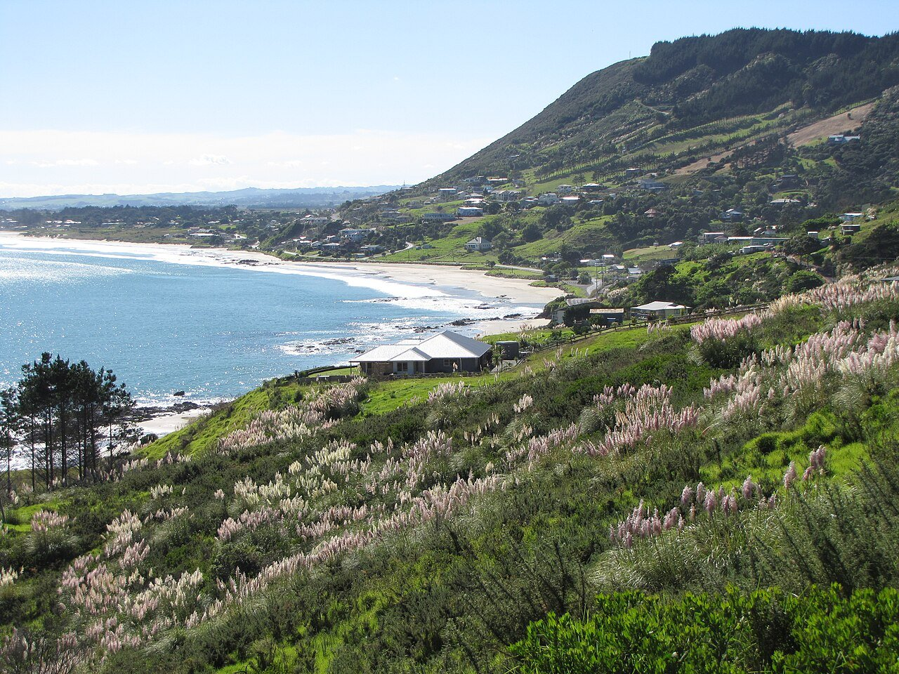
Photo: User:Gadfium · Wikimedia Commons, Public domain Ahipara
The hard sand ends for good at Ahipara, the little settlement on the southern tip of Ninety Mile Beach. The town grew up around the old gumfields, where diggers once prised fossilised kauri resin from the pale dunes that still rise above it. Inland wait the Northland forests and their muddy ridgelines.
-
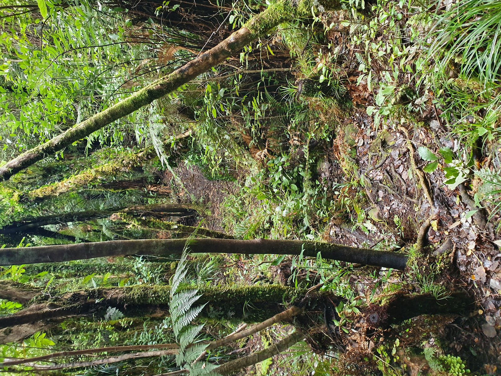
Photo: ShakyIsles · Wikimedia Commons, CC BY-SA 4.0 Raetea Forest Summit
Dripping bush gives way to the high broken ridge of the Raetea Forest, among the tallest ground in all of Northland. The track here is notorious, a churned ribbon of mud and tangled roots that swallows boots and humbles the over-confident. A view breaks between the trees before the careful descent toward the kauri groves ahead.
-
Mangamuka
Out of the Raetea mud at last, the trail spills onto the quiet valley road at Mangamuka, where the little roadside dairy is famous among walkers for its toasted sandwiches and cold drinks. The bush-clad Maungataniwha Range stands close around the marae and the handful of houses, before the green climb toward the kauri sanctuaries of Puketi.
-
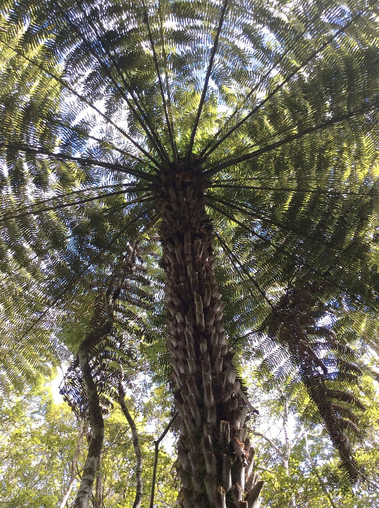
Photo: MurielBendel · Wikimedia Commons, CC BY-SA 4.0 Puketi Forest
Giants centuries old stand silent and mossy in the half-light of Puketi, one of Northland's great kauri sanctuaries. Boot-cleaning stations guard the forest against the dieback disease that threatens these ancient trees. The kōkako's mournful organ note carries through the canopy before the farmland that rolls toward the coast.
-
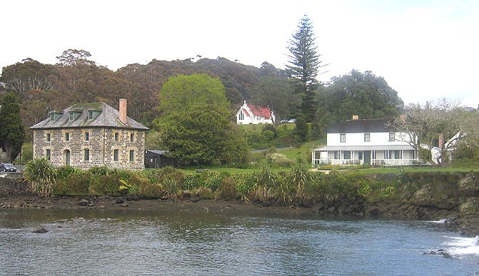
Photo: Photo taken by Moriori and released into the public domain. · Wikimedia Commons, Public domain Kerikeri Basin
The Kerikeri River slides past the oldest standing buildings in the country, in a basin walled with old stone. The Stone Store and Kemp House have watched the water since the 1830s, when missionaries and Māori met on these banks in uneasy trade. The trail turns south from here toward the Bay of Islands.
-
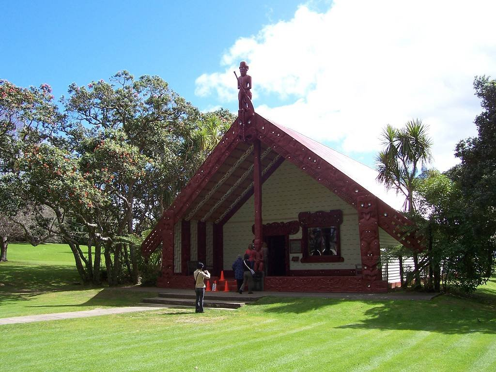
Photo: Vanderven · Wikimedia Commons, CC BY-SA 2.5 Paihia and Waitangi
At Paihia the shore opens across the blue scatter of the Bay of Islands, toward the Treaty grounds at Waitangi. It was on that lawn in 1840 that the founding document of modern New Zealand was signed, beneath the carved meeting house and the world's largest ceremonial waka. Beyond lie the eastern forests.
-
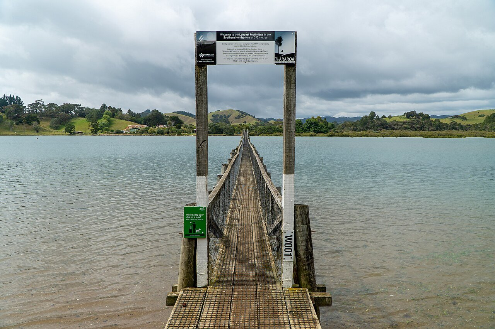
Photo: Jakub Šimáček · Wikimedia Commons, CC BY 2.0 Whananaki
The longest footbridge in the southern hemisphere crosses here, a slim timber span stitching the two halves of this quiet estuary settlement together. Whananaki is all oyster-studded inlets and pōhutukawa-fringed coves, far from any highway. The coastal track ahead climbs and falls along the cliffs.
-
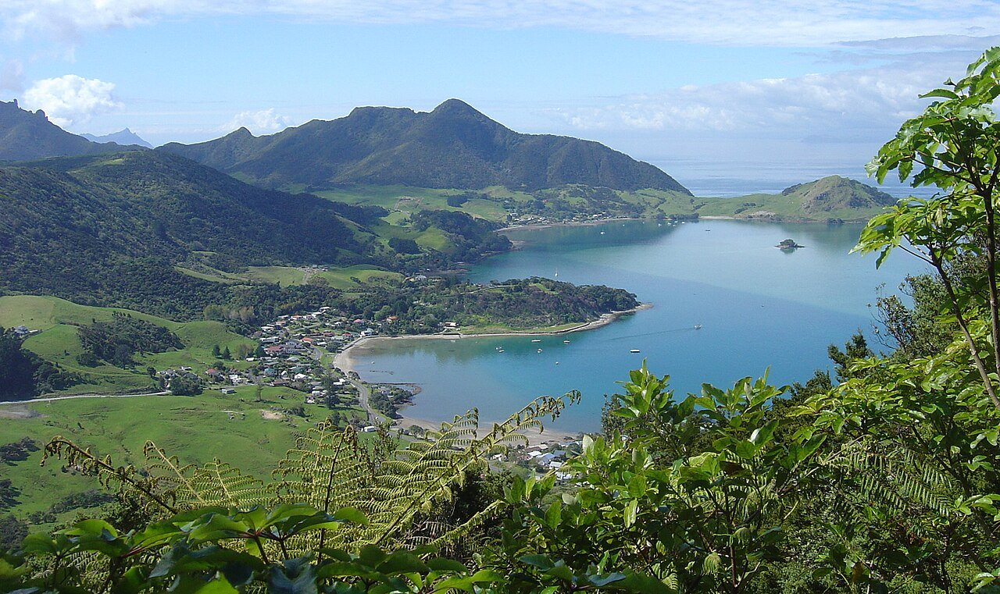
Photo: Follash · Wikimedia Commons, Public domain Bream Head, Whangārei Heads
A thousand rough steps climb the Te Whara Track over the jagged volcanic spine of Bream Head, ancient lava plugs thrust straight from the sea. From the tops the whole sweep of the Whangārei coast opens out, gannets wheeling off the cliffs below. It is one of the hardest and finest days in Northland, ahead of the long descent to the harbour.
-
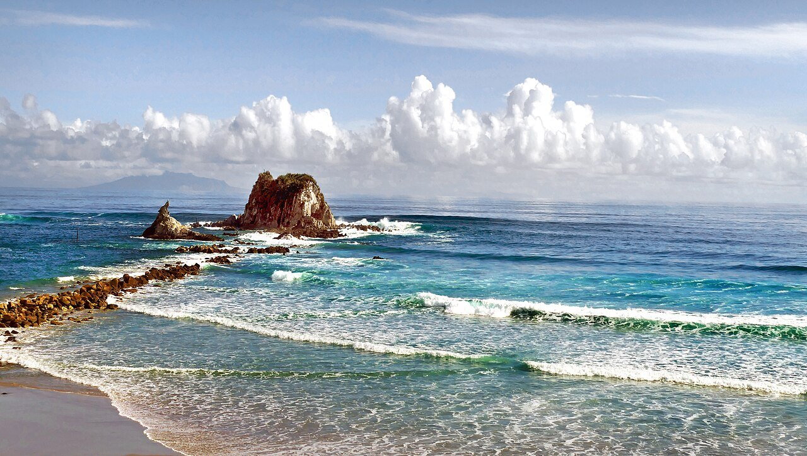
Photo: Bernard Spragg. NZ from Christchurch, New Zealand · Wikimedia Commons, Public domain Mangawhai Heads
The cliff-top walkway runs above a golden sweep of surf beach, a sand bar curling out into the turquoise estuary below. Mangawhai is a sun-warmed holiday town of fish and chips and rolling dunes, a gentle reward after the headland climbs. The long Pakiri sands wait to the south.
-
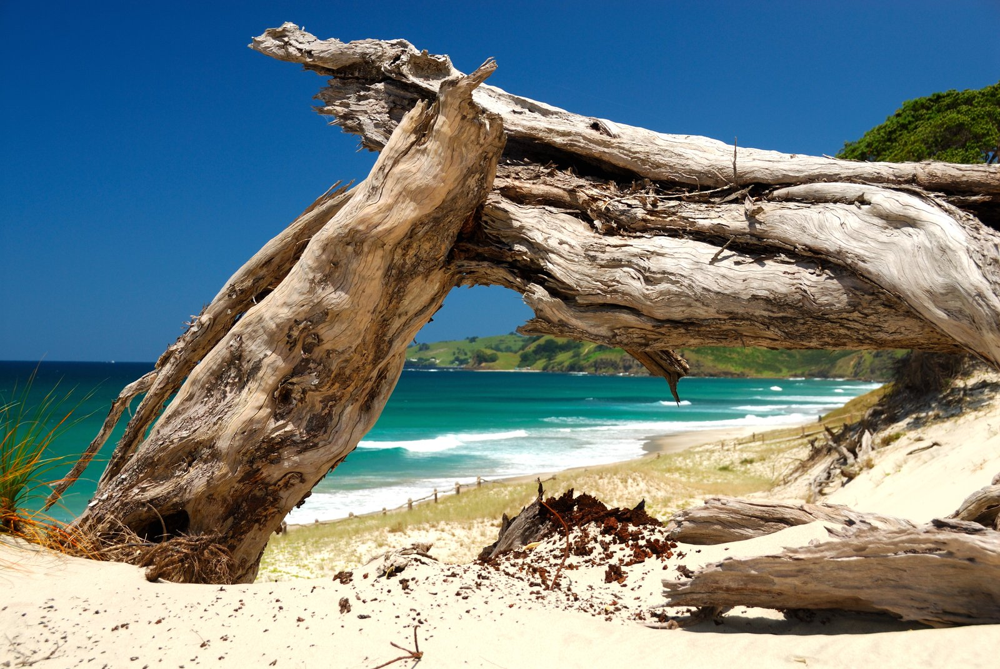
Photo: Piotr Zurek · Wikimedia Commons, CC BY-SA 2.0 Pakiri Beach
A wide arc of empty white sand opens along Pakiri, surf on one side and grass-tufted dunes on the other, the cleanest long beach left before the city. Its pure silica sand is so prized it has been quarried and shipped away for glassmaking. The river mouth must be crossed on the tide before the climb inland toward the Dome forest hills.
-
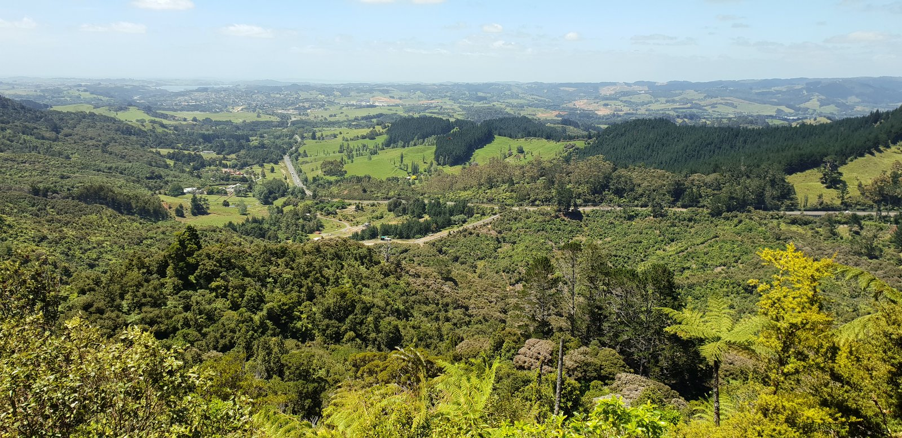
Photo: Anagoria · Wikimedia Commons, CC BY 3.0 Dome Forest
Regenerating bush closes over the climb to a wooden lookout high on the Dome, where on a clear day the cone of Rangitoto floats on the horizon above distant Auckland. A welcome café at the road below has fed weary walkers for years. From the summit the long descent runs toward the city's northern edge.
-
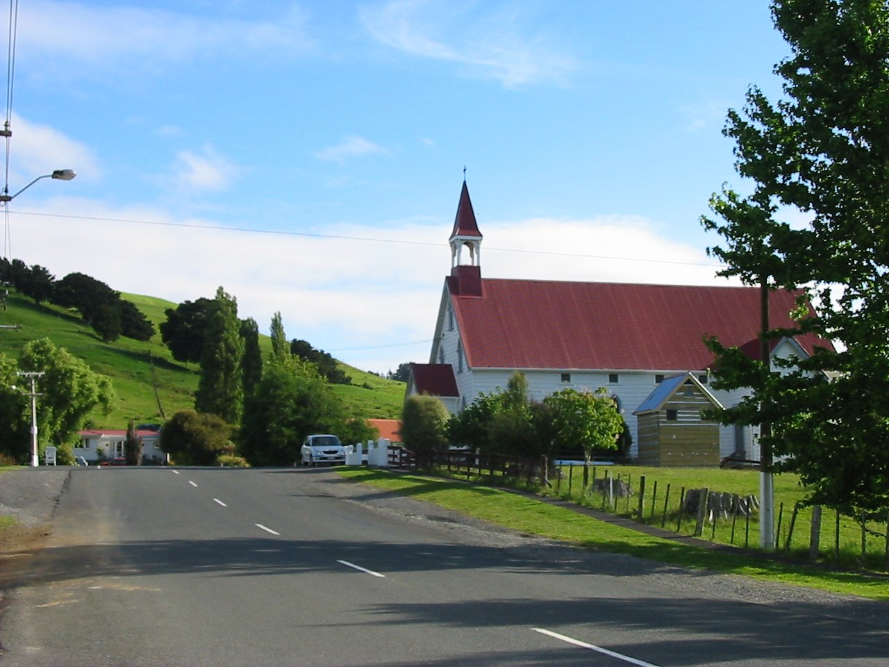
Photo: Dick Real at English Wikipedia · Wikimedia Commons, Public domain Puhoi
The tiny Bohemian village of Puhoi was settled in the 1860s by immigrants from what is now the Czech Republic, who carved farms out of the raw bush. Its historic pub, hung with curios and old photographs, has poured for thirsty travellers ever since. A tidal river runs down toward the coast and the harbour bridge.
-
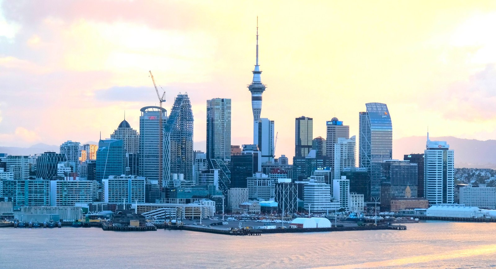
Photo: elpinto007 · Wikimedia Commons, CC BY-SA 2.0 Auckland
Auckland, the City of Sails, threads the trail through volcanic cones, harbour foreshores and the country's largest sprawl of streets. Tamaki Makaurau spreads across an isthmus studded with around fifty extinct volcanoes, each once a fortified Māori pā. The crowds and ferries make a strange contrast to the empty beaches of the north.
-
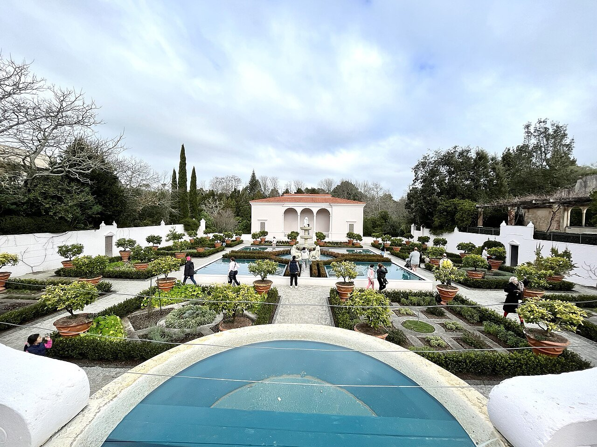
Photo: AnnWoolliams · Wikimedia Commons, CC BY-SA 4.0 Hamilton & the Waikato
The green banks of the Waikato, New Zealand's longest river, carry the trail into Hamilton through the dairy country. The river runs 425 kilometres from the slopes of Ruapehu to the Tasman Sea, and the trail traces its gardens and riverside paths through town.
-
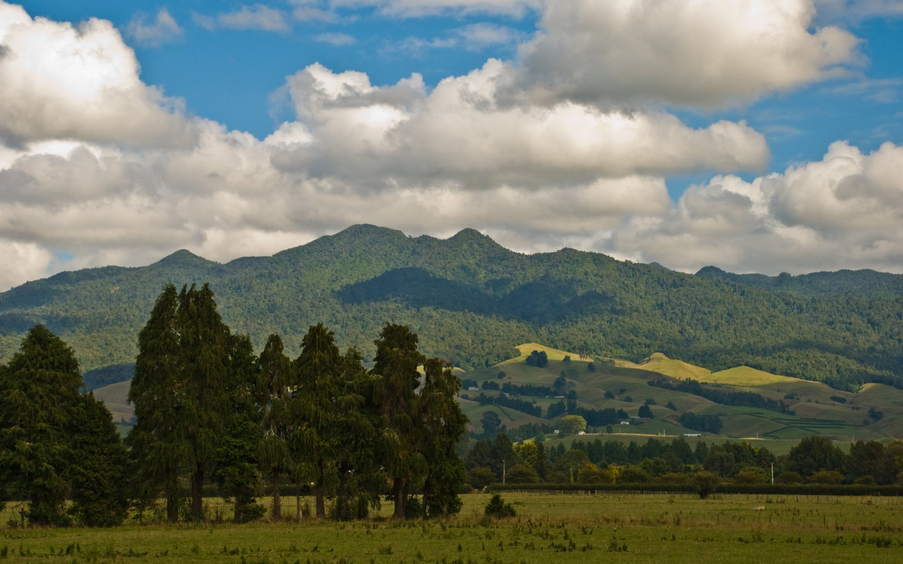
Photo: Phillip Capper from Wellington, New Zealand · Wikimedia Commons, CC BY 2.0 Mount Pirongia
Cloud forest closes over Mount Pirongia, an ancient eroded volcano whose tangled summit ridge is one of the muddiest, most root-bound stretches in the Waikato. A small alpine hut shelters near the misty tops, and the cone has been sacred to local iwi for generations. A slippery western descent drops toward the King Country farmland below.
-
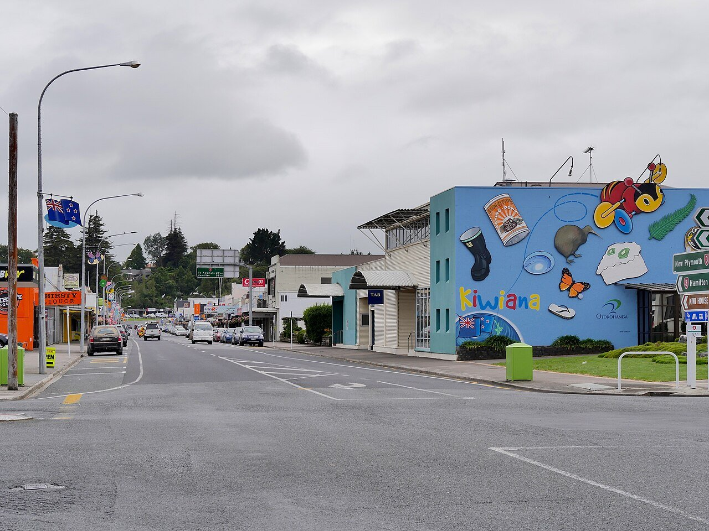
Photo: Ulrich Lange, Bochum, Germany · Wikimedia Commons, CC BY-SA 4.0 Ōtorohanga
This friendly farming town calls itself the Kiwiana capital, its main street decked in corrugated-iron icons of Kiwi life. Ōtorohanga's kiwi house is one of the best places in the country to glimpse the shy national bird snuffling in the dark. The limestone caves and the King Country ranges lie just ahead.
-
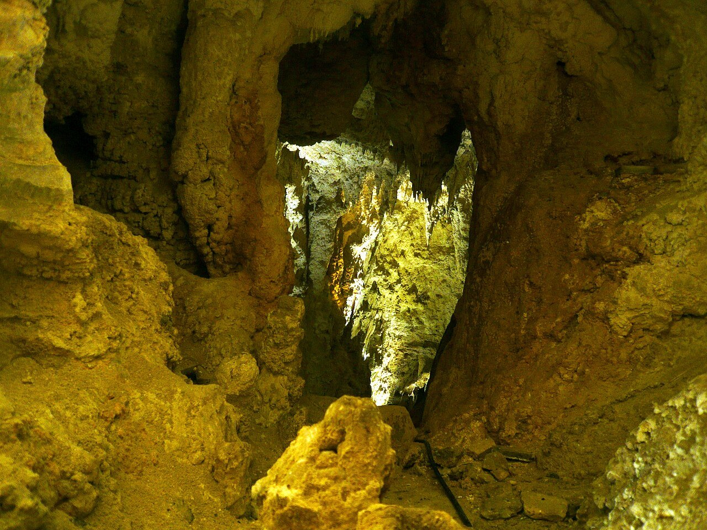
Photo: Николай Максимович · Wikimedia Commons, CC BY 3.0 Waitomo Caves
Underground rivers wind through the honeycombed limestone of Waitomo, caverns roofed with a cold blue constellation of glow-worms. The name means water passing through a hole, and the land here is riddled with sinkholes and hidden streams. Beyond, the trail climbs on toward the great forest of Pureora.
-
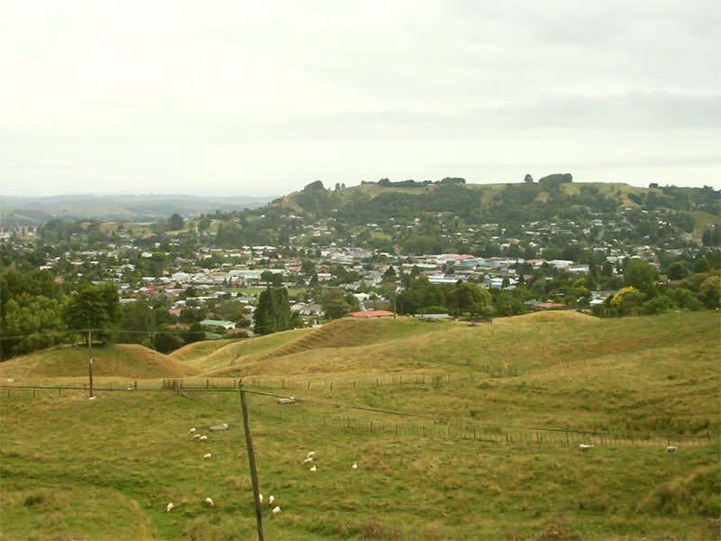
Photo: Richard Grevers · Wikimedia Commons, CC BY-SA 3.0 Te Kuiti
A giant statue of a shearer bent over his sheep guards the southern end of Te Kuiti, the self-proclaimed shearing capital of the world. Its woolsheds and saleyards still ring with the rhythm of the King Country's pastoral life. Beyond the river track begins the long remote crossing of Pureora Forest.
-
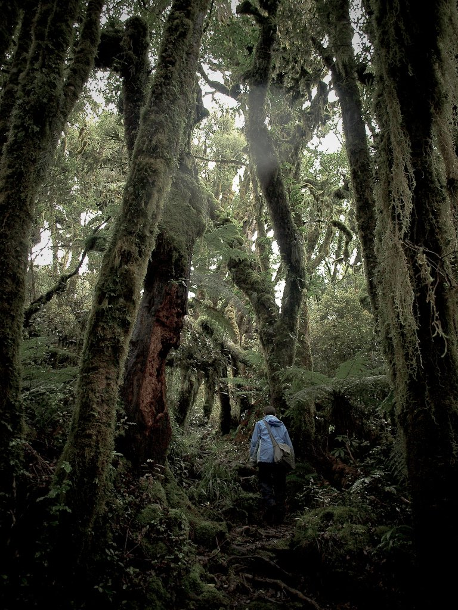
Photo: Thomas Camp (lifacolor) · Wikimedia Commons, CC BY 2.0 Pureora Forest
One of the last great podocarp forests of the North Island opens ahead, rimu and tōtara centuries old soaring from a fern-deep floor. In the 1970s protesters climbed these very trees to halt the loggers, a stand that helped end native logging on public land. The kōkako still survive here, along the old tramways of the Timber Trail south.
-
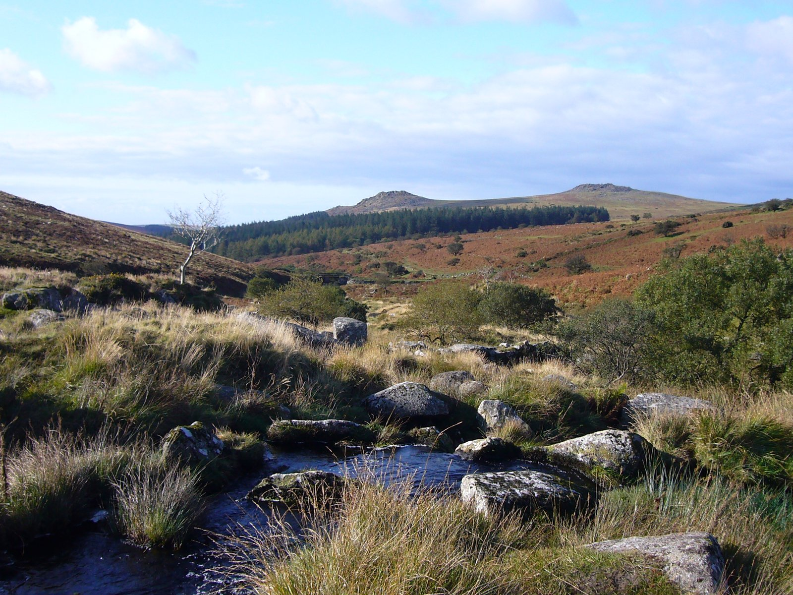
Photo: Myself - Herby talk thyme · Wikimedia Commons, CC BY-SA 4.0 Bog Inn Hut
Deep in the Pureora bush stands a tiny weathered hut, a four-bunk relic of the old timber days with a wood stove and a damp clearing all around. Out here the night is utterly black and loud with the calls of unseen birds. The river country ahead leads toward the Whanganui headwaters.
-
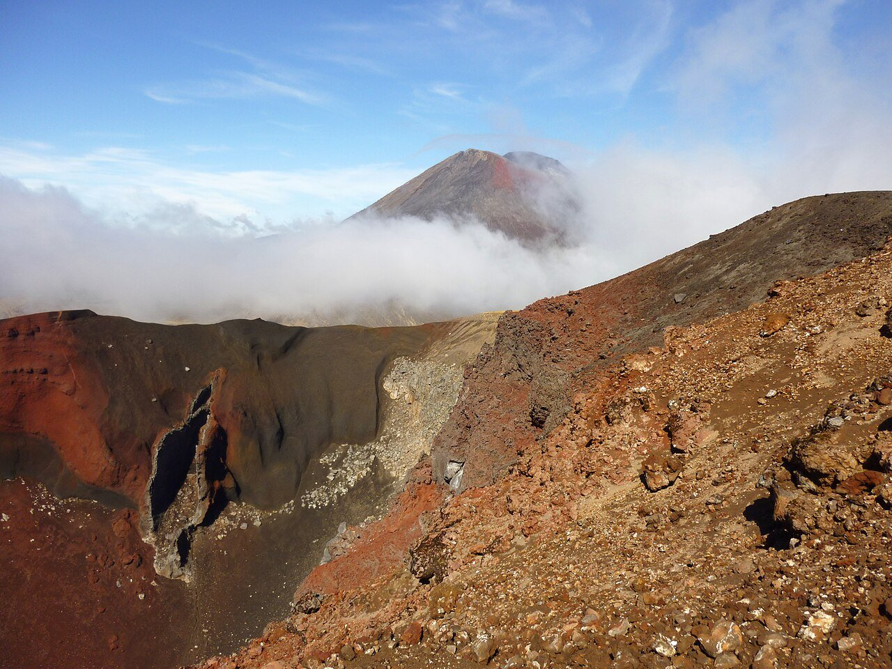
Photo: Borvan53 · Wikimedia Commons, CC BY-SA 3.0 Tongariro Alpine Crossing
The Tongariro Alpine Crossing climbs into the volcanic heart of the North Island, past steaming vents and the vivid Emerald Lakes. Above rises the perfect cone of Ngauruhoe, cast as Mount Doom in the Lord of the Rings films. Tongariro was New Zealand's first national park and is a dual World Heritage site, sacred to the Ngati Tuwharetoa people.
-
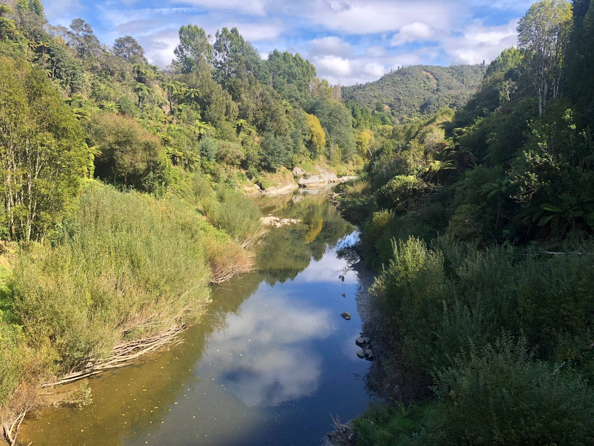
Photo: Johnragla · Wikimedia Commons, CC BY-SA 4.0 Whakahoro, Whanganui River
Here the boots come off and a paddle takes their place: at the Whanganui River, Te Araroa becomes a journey by canoe. For some 145 kilometres the route glides through deep gorges and native bush, running gentle rapids past the famous Bridge to Nowhere. The river was granted legal personhood in 2017, recognised in law as a living ancestor, Te Awa Tupua.
-
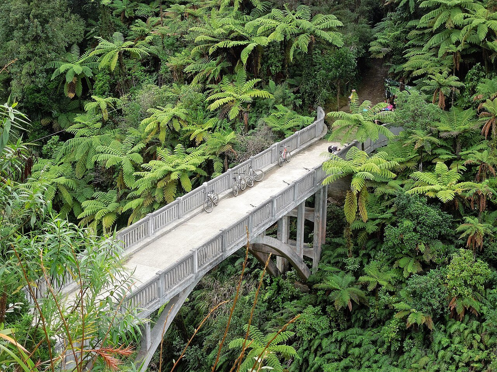
Photo: possumgirl2 · Wikimedia Commons, CC BY-SA 2.0 Bridge to Nowhere
A grand concrete arch stands alone in the regrowing forest, a road that was built but never properly joined to anywhere. It was raised in the 1930s for soldier-settlers whose farms in the Mangapurua Valley failed and were abandoned to the bush. The span crosses high above the gorge, the river running on toward the historic settlements below.
-
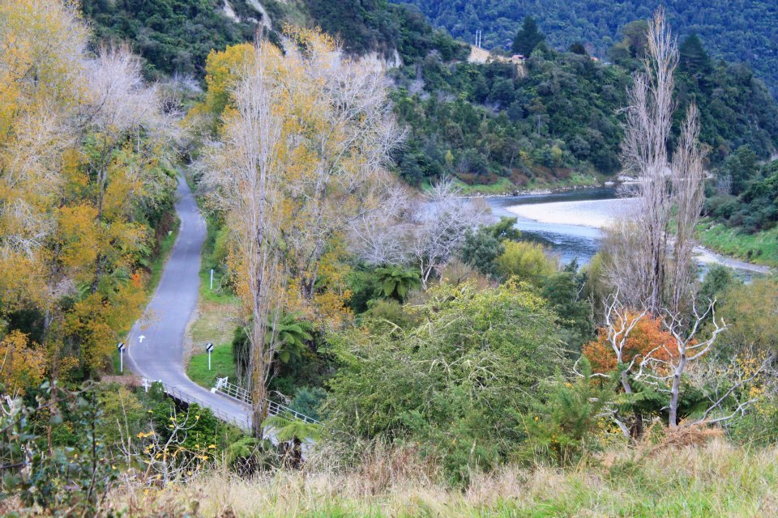
Photo: Parehaywardhowie · Wikimedia Commons, CC BY-SA 3.0 Pipiriki
The old river landing at Pipiriki was once a bustling stop for the paddle steamers that carried tourists up what was billed as the Rhine of New Zealand. Today it is a quiet riverside marae settlement where the jetboats put in and out. The winding river road runs south past the convent village of Jerusalem.
-
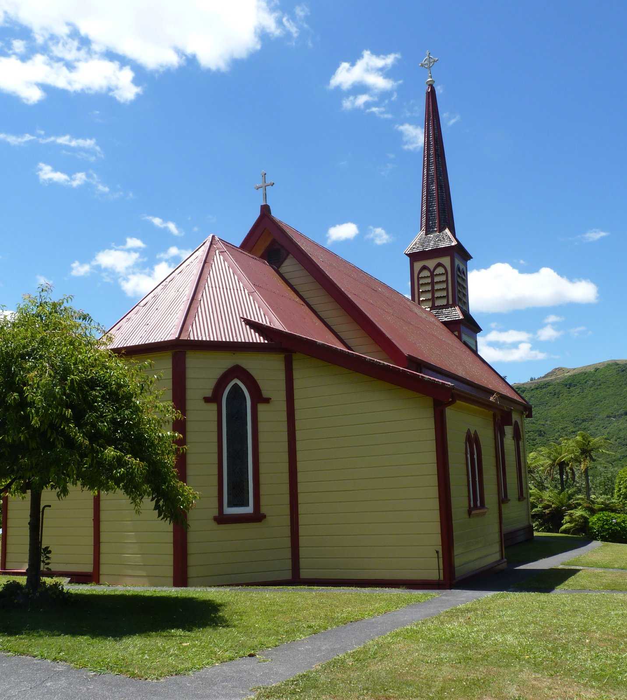
Photo: Michal Klajban · Wikimedia Commons, CC BY-SA 4.0 Jerusalem (Hiruhārama)
The white timber church of Jerusalem rises above a bend in the river, a Catholic mission founded among the riverside Māori in the 1850s. The poet James K. Baxter built his commune here in his final years, and lies buried in the valley. The convent still welcomes travellers along the long quiet road toward the sea.
-
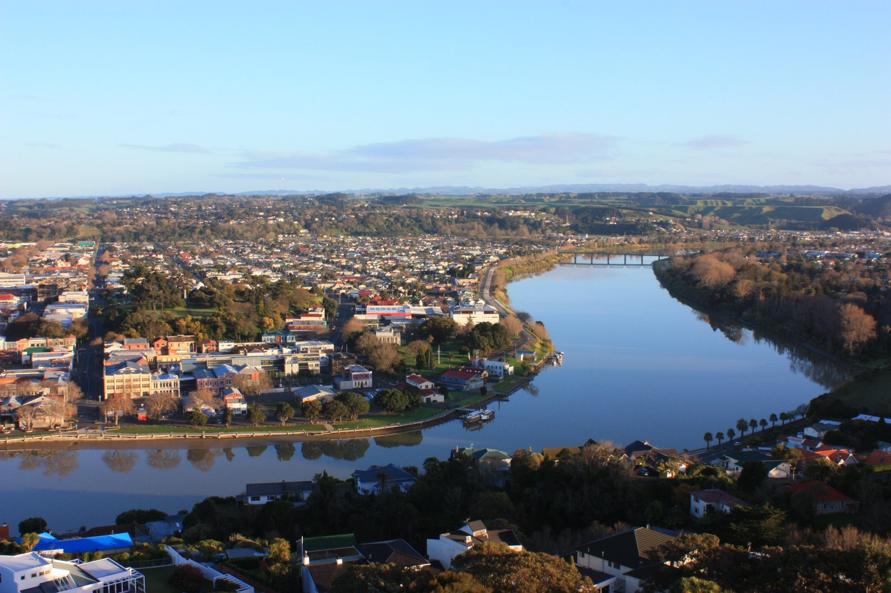
Photo: Ang Wickham · Wikimedia Commons, CC BY 2.0 Whanganui
The great river finally meets the sea at Whanganui, a coastal town at the end of the water road. The restored paddle steamer Waimarie still works these waters, a survivor of the riverboat era when this was a busy trading port. From here the trail turns inland toward the rugged Tararua Range.
-
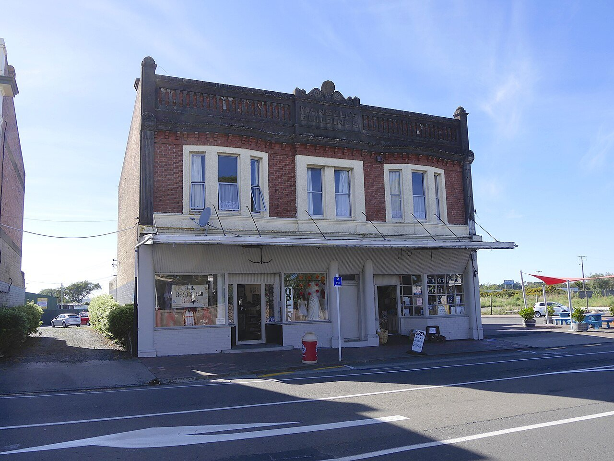
Photo: Ulrich Lange, Bochum, Germany · Wikimedia Commons, CC BY-SA 4.0 Bulls
Every shopfront in this small Rangitīkei town puns on its bovine name, worn with shameless humour. Beneath the jokes, Bulls is a tidy farming service centre at the crossing of two highways. The flat Manawatū plains run on from here toward Feilding.
-
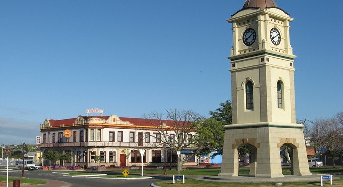
Photo: Cody Cooper · Wikimedia Commons, CC BY-SA 3.0 Feilding
Feilding has been voted New Zealand's tidiest town again and again, its broad square and busy saleyards speaking of generations of farming prosperity. The livestock auctions here are among the largest in the country. The last flat stretch runs on across the plains toward Palmerston North.
-
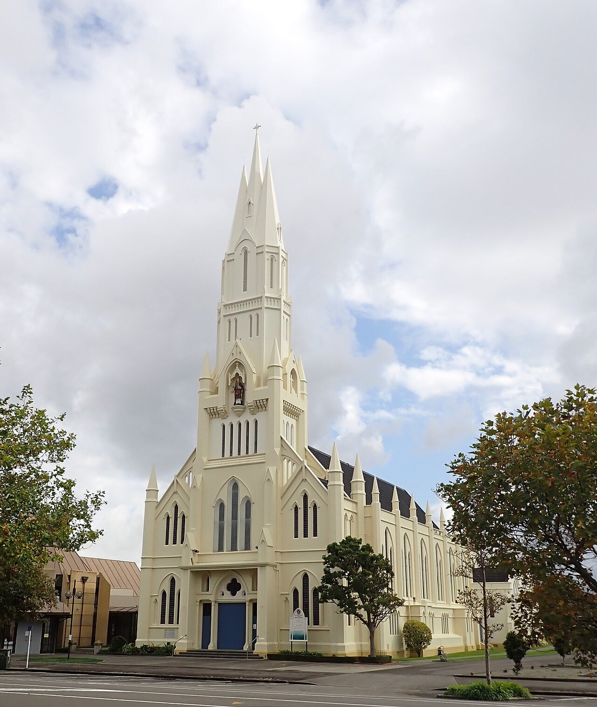
Photo: Mike Dickison · Wikimedia Commons, CC BY 4.0 Palmerston North
A university city on the Manawatū plains, Palmerston North is a welcome flat stretch before the mountains bite. The wide Square at its centre is among the largest urban parks in the country. Ahead lie the notoriously wild and weather-lashed Tararua tops.
-
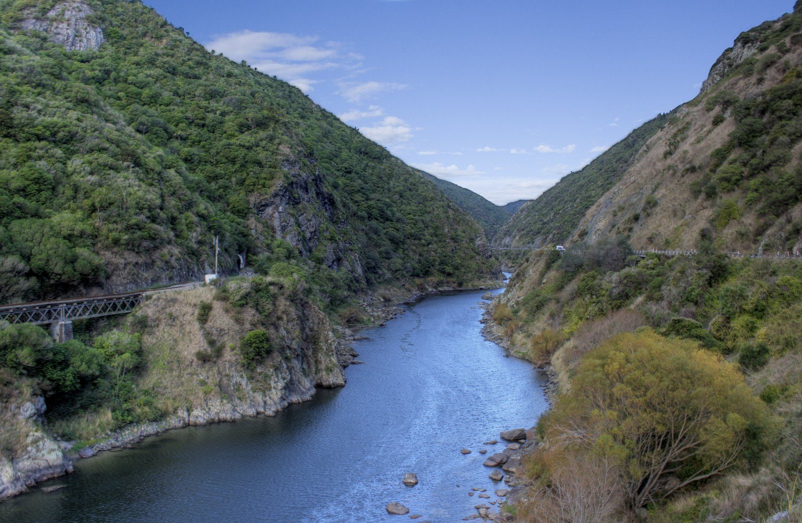
Photo: Kane · Wikimedia Commons, CC BY 2.0 Tokomaru and the Tararua Foothills
The plains fall behind and the land begins to rise toward the dark wall of the Tararua Range, wind turbines spinning on the high ridges. The little settlement of Tokomaru shelters a steam-engine museum at the foot of the hills. The notorious Tararua tops lie just ahead, past the last point to check the forecast.
-
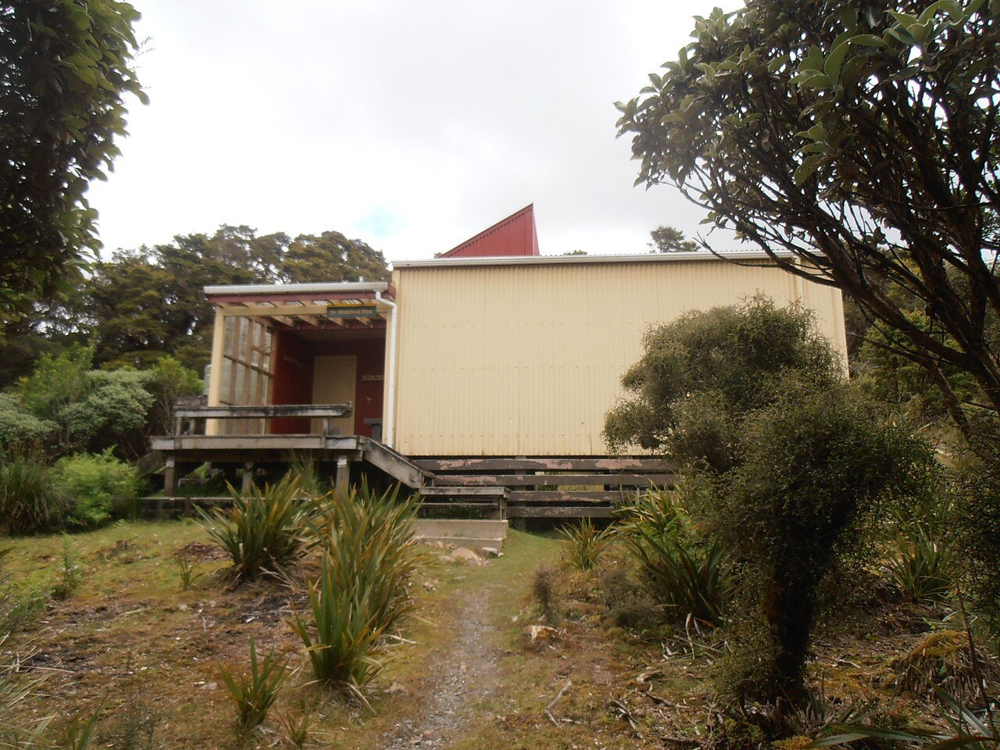
Photo: Sarang · Wikimedia Commons, Public domain Te Matawai Hut
A sturdy hut perches on a tussock saddle high in the Tararua Forest Park, clouds racing across the exposed tops all around. The weather here can turn from sun to whiteout in minutes, and many a tramper has been pinned down waiting it out. The high ridge ahead demands a settled sky.
-
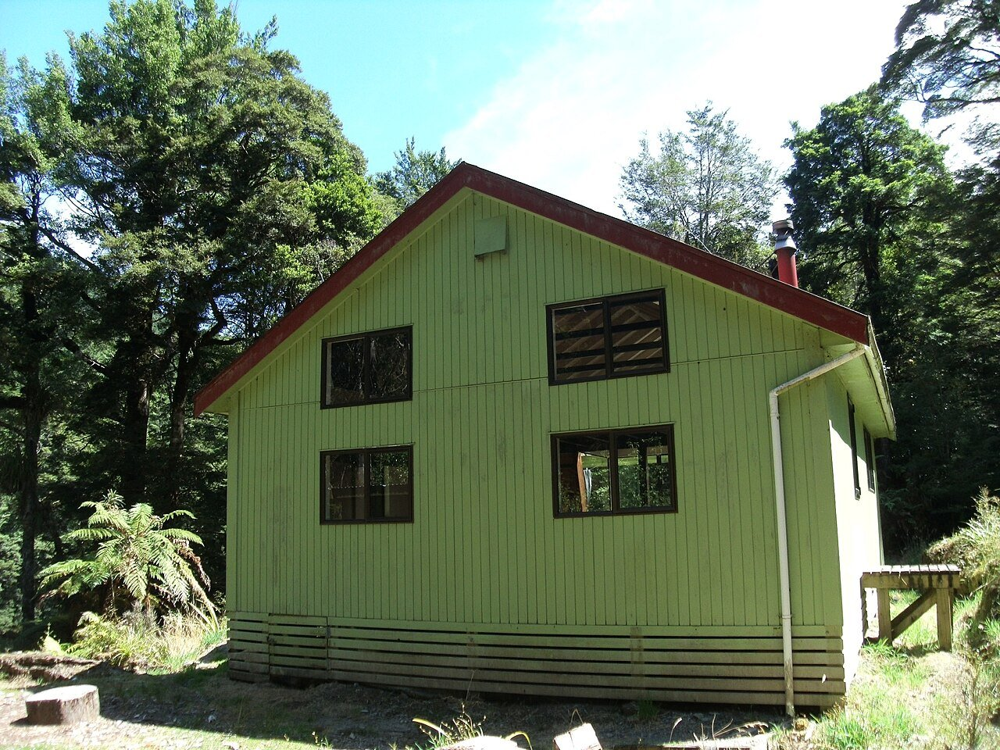
Photo: Sarang · Wikimedia Commons, Public domain Waitewaewae Hut
A steep drop off the tops leads to a forest-cradled hut beside the Ōtaki River, the roar of the water a relief after the bare windswept ridgelines. Trampers know it fondly as YTYY, for the tongue-twisting Māori name no one quite remembers how to say. The gorge below runs down out of the mountains toward the Kāpiti coast.
-
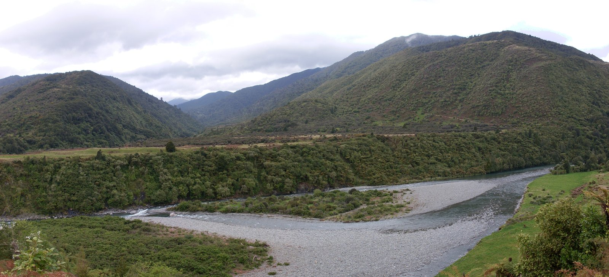
Photo: Pipe42 · Wikimedia Commons, Public domain Ōtaki Forks
Grassy river flats open at Ōtaki Forks, the western doorway to the Tararuas, where three rivers meet beneath the bush-clad ranges. Swimming holes and a quiet campground make it a welcome decompression after the high crossing. The valley drops on toward the coast and the long approach to Wellington.
-
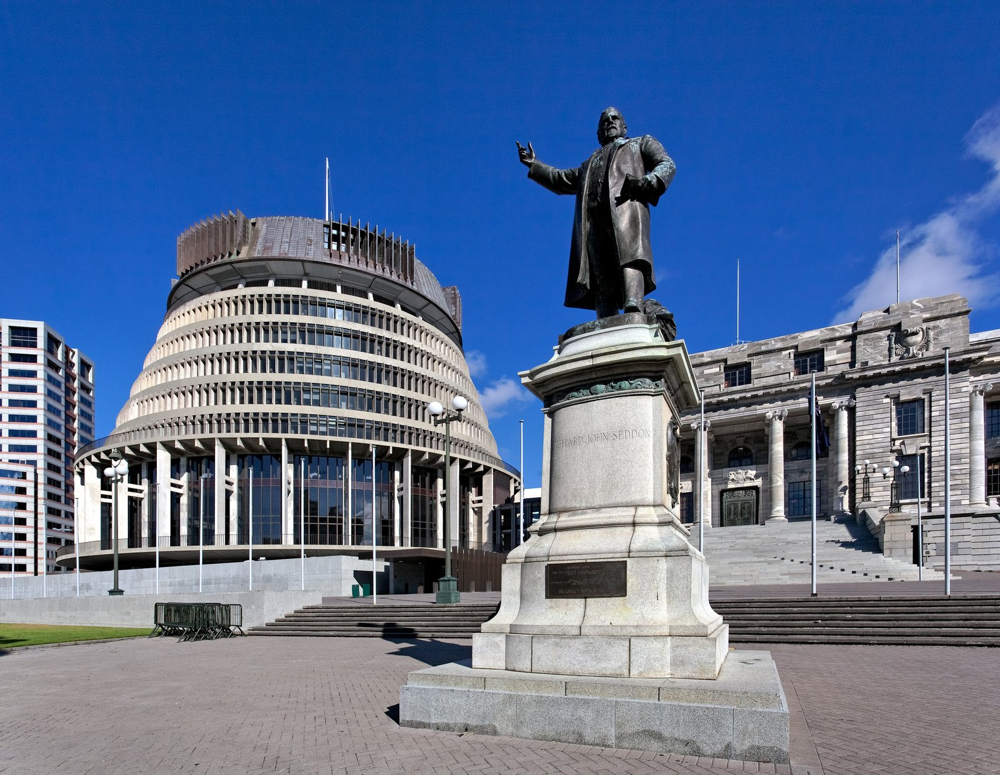
Photo: russellstreet · Wikimedia Commons, CC BY-SA 2.0 Wellington
The windy capital sits perched around its harbour at the foot of the North Island. Seventeen hundred kilometres of the trail now lie behind, and Wellington's cable car and Te Papa museum feel like another world after the Tararua ridges. From here the ferry crosses Cook Strait to begin the South Island.
-
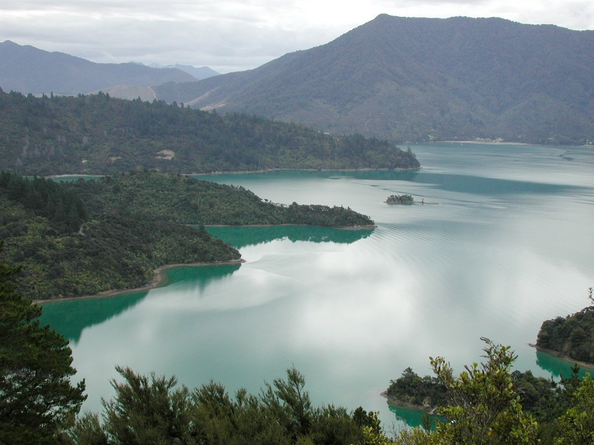
Photo: Pseudopanax at English Wikipedia · Wikimedia Commons, Public domain Ship Cove, Queen Charlotte Track
Ship Cove, in the Marlborough Sounds, is where Captain Cook first anchored the Endeavour in 1770, returning four more times on later voyages. From here the Queen Charlotte Track winds for seventy kilometres along forested ridges above turquoise bays and drowned river valleys. The South Island has begun, with the sea everywhere below.
-
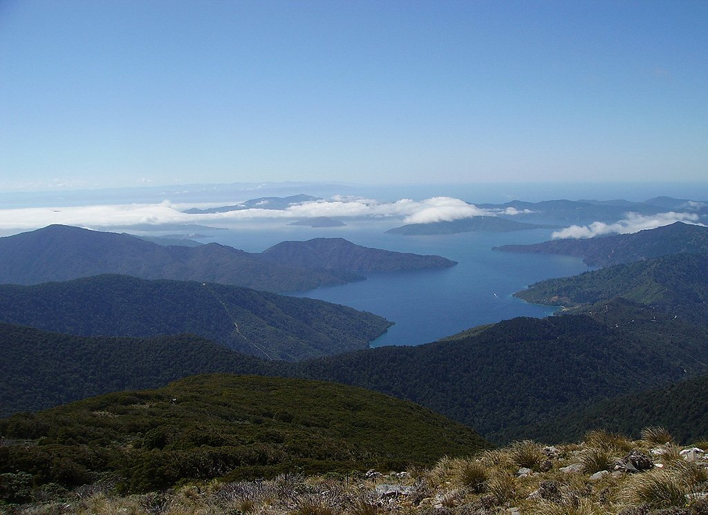
Photo: nut.in.a.hut · Wikimedia Commons, CC BY-SA 3.0 Queen Charlotte Track, Punga Cove
The ridgeline of the Queen Charlotte Track runs on, glittering blue sounds opening on either side through the regenerating forest. These drowned river valleys were where Captain Cook anchored repeatedly to refit his ships and chart the coast. Boats trace silver wakes far below as the undulating track winds on toward Anakiwa.
-
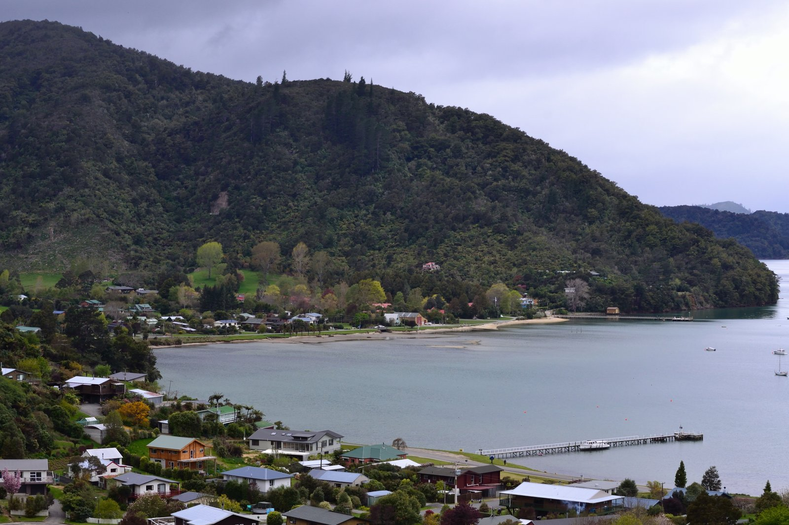
Photo: Samuel J Arnold · Wikimedia Commons, CC BY-SA 3.0 Anakiwa
Calm green water and moored yachts mark Anakiwa, the leafy bayside hamlet at the southern end of the Queen Charlotte Track. The outdoor school here has launched generations of young New Zealanders into the wild. Inland the route turns toward the Pelorus River and the rugged Richmond Range beyond.
-
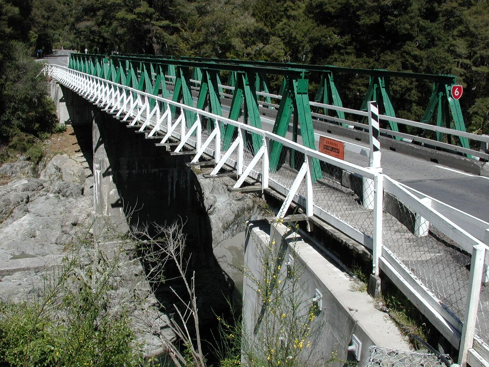
Photo: Pseudopanax at English Wikipedia · Wikimedia Commons, Public domain Pelorus Bridge
Deep emerald pools gather where a graceful old bridge spans the Pelorus River, a gorge of mossy boulders and clear green water. The scenic reserve here protects one of the last patches of lowland forest in Marlborough, and its café is famously hard to leave. The long climb into the Richmond Range begins beyond.
-
Captain Creek Hut
A small old hut sits beside the Pelorus River where it tumbles down out of the Richmond Range, the bush closing thick around the clearing. This is the first night's shelter on the trail's most demanding and rocky section. Water is best filled here, for the high huts ahead are notorious for running dry in the summer months.
-
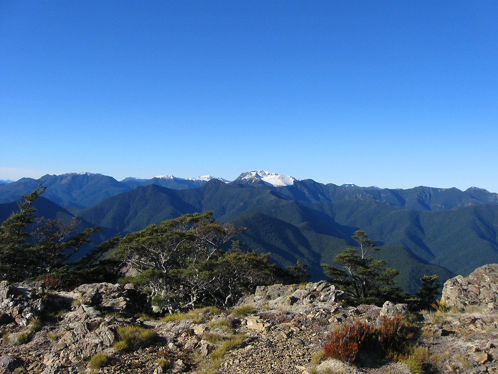
Photo: nut.in.a.hut · Wikimedia Commons, CC BY-SA 3.0 Rintoul Hut
High beneath the shattered scree peak of Mount Rintoul waits this hut, with the hardest single day on the whole trail rising ahead. The Richmond Range here is all loose rock and exposed ridge, brutal and magnificent. Tomorrow the route scrambles over Rintoul's bouldery summit before the long drop toward St Arnaud.
-
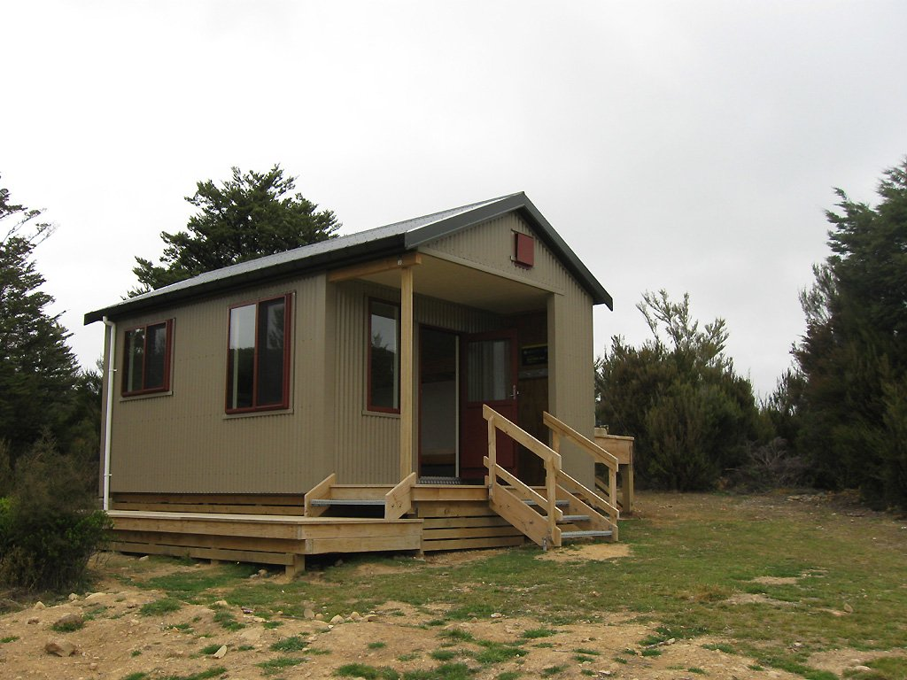
Photo: nut.in.a.hut · Wikimedia Commons, CC BY-SA 3.0 Red Hills Hut
Rust-coloured mineral slopes give this corner of the range its name, the strange iron-stained earth supporting almost no plants, and a neat little hut stands among them. The hardest of the Richmond ridges now lie behind, and the lake town of St Arnaud is nearly within reach. Beech forest falls away toward Nelson Lakes.
-
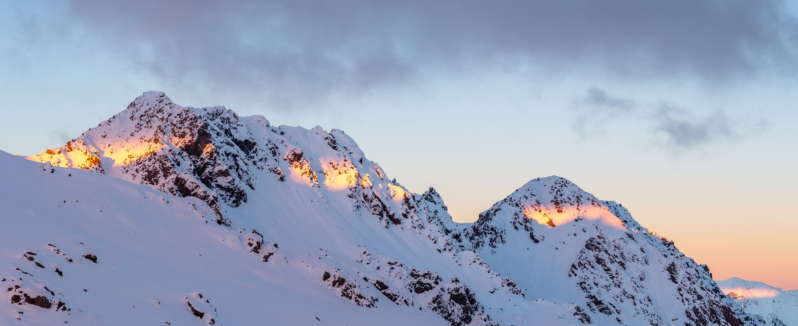
Photo: Michal Klajban · Wikimedia Commons, CC BY-SA 4.0 St Arnaud, Nelson Lakes
St Arnaud sits on the shore of Lake Rotoiti at the edge of Nelson Lakes National Park, reached at last across the long and rugged Richmond Ranges. Beech forest runs down to the still water, and kea wheel overhead in the clear mountain air. Ahead, the trail climbs into the true Southern Alps.
-
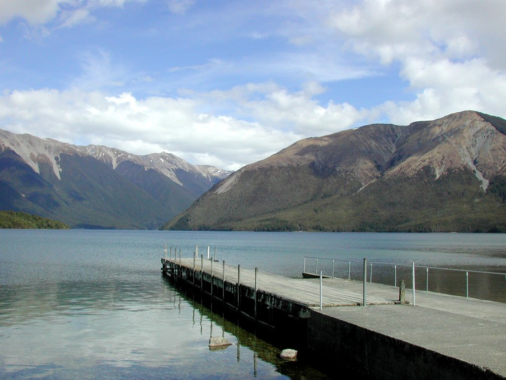
Photo: Pseudopanax at English Wikipedia · Wikimedia Commons, Public domain Lake Rotoiti, Travers Valley
Still water mirrors the beech-clad slopes of the Travers Valley along the forested shore of Lake Rotoiti. Tame eels and trout cruise the famous jetty, and the dawn chorus here is among the richest in the country, thanks to decades of predator control. The long valley climbs from the lake head toward Travers Saddle.
-
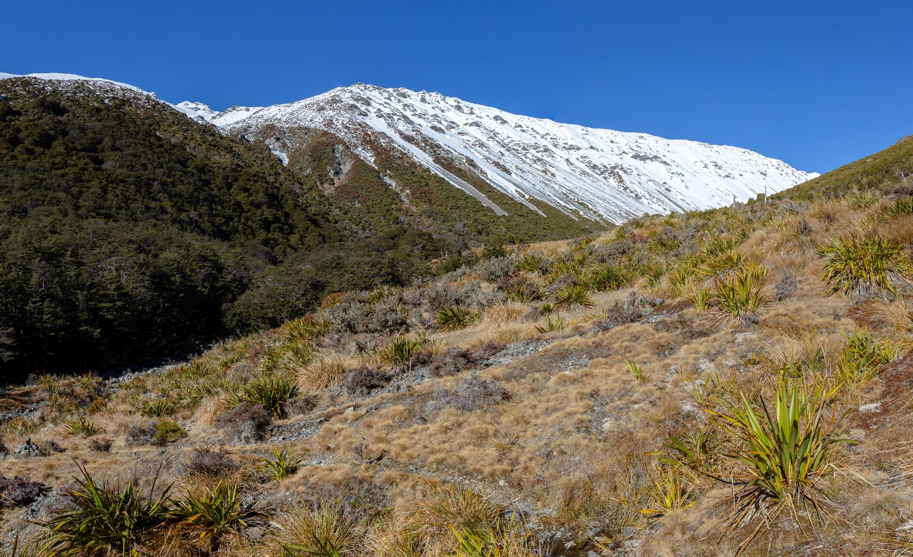
Photo: Michal Klajban · Wikimedia Commons, CC BY-SA 4.0 Upper Travers Hut
The Travers Valley narrows to a hut high near its head, the river a braided silver thread below and the bare peaks closing in. Above rises Travers Saddle, a steep alpine pass that crosses the spine of the Saint Arnaud Range. The climb over the saddle and down the Sabine is one of the most spectacular of the whole journey.
-
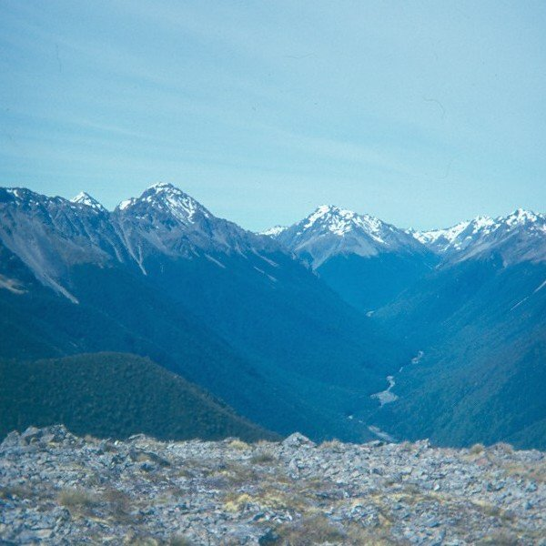
Photo: Zaqrfv · Wikimedia Commons, Public domain West Sabine Hut
Off the far side of Travers Saddle, a hut hides in deep beech forest where the Sabine River races past over pale stones. Nearby the river plunges through a slot gorge into the otherworldly blue of Blue Lake, which holds the clearest natural fresh water on Earth. The river runs on down toward the Waiau and Boyle country.
-
Boyle Village
A small outdoor education base at Boyle Village makes a welcome road-end resupply between two great wilderness stretches. Many walkers cache a food box here before tackling the Harper Pass crossing ahead. The route strikes west up the river toward the main divide.
-
Hope Kiwi Lodge
Kiwi call in the dark here, giving this large warm lodge its name, and it sits in a grassy clearing ringed by beech forest. The Hope Valley is gentle walking, a soft interlude between the rivers. The route continues up toward the saddle that crosses to the West Coast watershed.
-
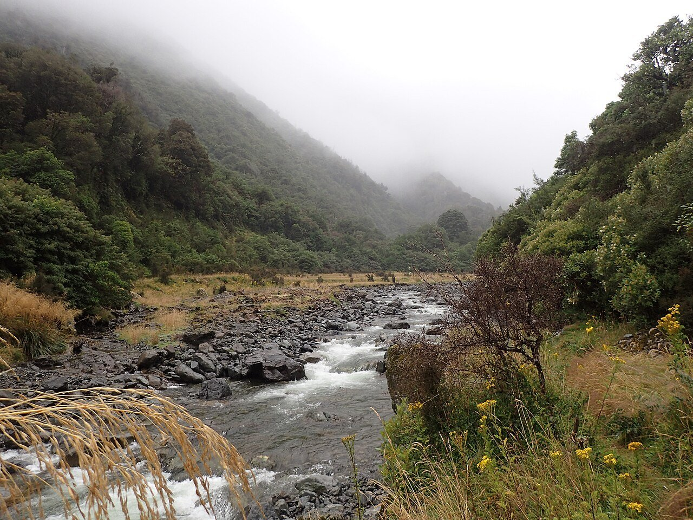
Photo: LawrieM · Wikimedia Commons, CC BY-SA 4.0 Harper Pass
Harper Pass tops the Southern Alps' main divide, a low forested saddle that Māori once used to carry pounamu greenstone between the coasts. From here the rivers run west to the Tasman Sea instead of east. The long braided descent follows the Taramakau toward Arthur's Pass.
-
Locke Stream Hut
An old red-roofed hut stands in a forest clearing in the upper Taramakau, loud with birdsong and the murmur of the river. This is classic West Coast tramping country, lush and dripping and green. The trail pushes on from here toward the highway and the alpine village of Arthur's Pass.
-
Photo: Michal Klajban · Wikimedia Commons, CC BY-SA 4.0 Goat Pass Hut
The Mingha–Deception route climbs to Goat Pass, a wild boulder-hopping crossing raced each year by competitors in the Coast to Coast multisport event. The hut sits on a tussock saddle wreathed in mountain mist, alpine flowers studding the rocks. The Mingha descends from here toward the Bealey and Arthur's Pass village.
-
Photo: Krzysztof Golik · Wikimedia Commons, CC BY-SA 4.0 Arthur's Pass
At the spine of the Southern Alps, Arthur's Pass marks where the dripping rainforest of the West Coast gives way to the dry tussock of Canterbury. At 920 metres it is the highest road pass over the divide, named for the surveyor Arthur Dobson who found it in 1864. The bold alpine parrot, the kea, patrols the village and car parks.
-
Photo: Michal Klajban · Wikimedia Commons, CC BY-SA 4.0 Hamilton Hut
A grassy valley flat south of Arthur's Pass holds this large modern hut, where the beech forest gives way to open tussock country. It is one of the more comfortable shelters on the trail, a fine place to wash off the alpine grime. The saddles ahead climb toward the wide Rakaia and the high country lakes beyond.
-
Photo: Andrew Crump from London, UK · Wikimedia Commons, CC BY 2.0 Lake Coleridge
Lake Coleridge is a long blue trench scooped out by ancient glaciers, ringed by the dry tussock ranges of inland Canterbury. New Zealand's first state hydro station was built here in 1914, drawing power from the lake's depths. Beyond the tiny village lies the ford of the great braided Rakaia.
-
Photo: Andrew Cooper · Wikimedia Commons, CC BY-SA 4.0 Rakaia River
The Rakaia spreads its silty channels across a flat grey valley a kilometre and more wide, a vast braided river seen from the stony bank. The trail treats this dangerous crossing as a hazard zone, and most walkers arrange a road shuttle around it. Beyond, the route climbs south through the Two Thumb high country toward Tekapo.
-
Photo: Bernard Spragg. NZ from Christchurch, New Zealand · Wikimedia Commons, CC0 Royal Hut, Two Thumb Range
Golden tussock climbs across the Two Thumb Range to a small hut once visited by a young Prince Charles and Princess Anne, which gave it its regal name. The bare rounded tops roll away in every direction under an enormous sky. Above rises Stag Saddle, the highest point on the entire trail.
-
Photo: Michal Klajban · Wikimedia Commons, CC BY-SA 4.0 Stag Saddle
At 1925 metres, Stag Saddle is the rooftop of the whole Te Araroa, the snowy bulk of Aoraki Mount Cook rearing across the valley. Below, the milky turquoise of Lake Tekapo spreads out toward the plains. The ridge runs down from this hard-won high point toward the lakeshore and the dark-sky town.
-
Photo: Krzysztof Golik · Wikimedia Commons, CC BY-SA 4.0 Lake Tekapo
The shore of Lake Tekapo runs milky turquoise, its colour born of glacial rock flour suspended in the meltwater. The little stone Church of the Good Shepherd stands alone above the lake, framed by the Southern Alps. This is the heart of an International Dark Sky Reserve, where on a clear night the Milky Way blazes from horizon to horizon.
-
Photo: Hagai Agmon-Snir حچاي اچمون-سنير חגי אגמון-שניר · Wikimedia Commons, CC BY-SA 4.0 Lake Pukaki
The same glacial rock flour that tints Tekapo colours Lake Pukaki too, a milky-blue expanse with Aoraki framed perfectly at its head. Few views in the country are so photographed, and few so deserve the attention. The canal and lakeshore lead on toward the little town of Twizel.
-
Photo: Mattinbgn (talk · contribs) · Wikimedia Commons, CC BY 3.0 Twizel
Twizel was thrown up in the 1960s to house the workers of the great Waitaki hydro scheme, and never quite dismantled afterwards. Nearby the rare black stilt, one of the world's most endangered wading birds, clings to survival on the braided riverbeds. The long tussock traverse to the Ahuriri and the Ōhau lakes lies ahead.
-
Photo: The original uploader was JShook at English Wikipedia. · Wikimedia Commons, CC BY 2.5 Lake Ōhau
Beneath the Ben Ōhau Range, Lake Ōhau lies a deeper blue than its glacial neighbours, rimmed with golden tussock. A small ski field and lodge cluster on the far side. The trail climbs away from the lake into trackless tussock, bound for the wild Ahuriri valley.
-
Photo: Krzysztof Golik · Wikimedia Commons, CC BY-SA 4.0 Ahuriri River
The broad open valley of the Ahuriri holds one of the finest braided rivers in the South Island, its clear channels weaving across a flat of matagouri and tussock. The crossing here can be tricky after rain and demands respect. Beyond it the trail climbs toward Martha Saddle and the high country above Lake Hāwea.
-
Martha Saddle
Martha Saddle tops out at over 1680 metres, the highest point on the formed track in this region, the bare alpine tops stretching golden and empty around it. Old gold and tungsten workings from the Timaru valley lie scattered nearby. The Timaru River descends from the windy pass toward the great lakes of Hāwea and Wanaka.
-
Photo: Krzysztof Golik · Wikimedia Commons, CC BY-SA 4.0 Lake Hāwea
A steep blue trench hemmed by dry brown ranges, Lake Hāwea had its level famously raised by a dam to feed the downstream power stations. The lakeside township offers a welcome shop and a cold swim. The neck of land called The Neck runs between the two lakes, tracing the shore toward Wanaka.
-
Photo: Hagai Agmon-Snir حچاي اچمون-سنير חגי אגמון-שניר · Wikimedia Commons, CC BY-SA 4.0 Wanaka
Wanaka sits beside its great glacier-carved lake, a relaxed alpine town ringed by peaks. Out in the shallows grows the lone willow known the world over as That Wanaka Tree. The high passes of the Motatapu and the Crown Range still stand between the town and Queenstown.
-
Photo: Bernard Spragg. NZ from Christchurch, New Zealand · Wikimedia Commons, CC0 Glendhu Bay
The willow-lined shore of Lake Wanaka leads to the wide grassy flat of Glendhu Bay, Mount Aspiring's snowfields gleaming up the valley. This is the start of the brutal Motatapu Track, three big climbs on the way to Arrowtown. It is the hardest climbing since the Richmonds.
-
Highland Creek Hut, Motatapu
Over the first of the Motatapu Track's relentless climbs, a small hut hides in a remote tussock fold of land once owned by the founder of a global clothing brand, who opened it to walkers. The valleys here are silent and steep and utterly empty. The next punishing saddle waits on the long way to Arrowtown.
-
Photo: Bernard Spragg. NZ from Christchurch, New Zealand · Wikimedia Commons, CC0 Queenstown
Queenstown lies on the shore of Lake Wakatipu, beneath the jagged wall of The Remarkables. Born in the 1860s gold rush, it is now the adventure capital of New Zealand. The lake itself seems to breathe, its level rising and falling about twenty centimetres in a slow rhythm Māori call the heartbeat of the taniwha Matau.
-
Photo: Phillip Capper from Wellington, New Zealand · Wikimedia Commons, CC BY 2.0 Invercargill
Invercargill, the southernmost city in New Zealand, comes after the lonely tussock of the Mavora Lakes and the Takitimu forests. Its wide streets and Victorian buildings feel like the edge of the world, because they very nearly are. Only one short stretch of coast now lies between the city and the finish at Bluff.
-
Photo: studio tdes from Auckland, New Zealand · Wikimedia Commons, CC BY 2.0 Stirling Point, Bluff
The last metres run out at the yellow signpost at Stirling Point, where road and trail end together above Foveaux Strait. Three thousand kilometres of beaches, rivers, forests and alpine passes stretch back from here, the whole length of Aotearoa underfoot. This is the end of Te Araroa, the Long Pathway, walked from one tip of the country to the other.
Walking Te Araroa
Your watch is already counting these steps. Watch Walks spends them on Te Araroa, all 3,000 km of it, and hands you each landmark as you reach it. There's no route recording, no account and no ads. The Inca Trail is free; this one is a one-time purchase with no subscription.
Other trails in Oceania
- Bibbulmun Track 1,000 km · Australia
- Larapinta Trail 223 km · Australia (NT)
- Australian Alps Walking Track 655 km · Australia (VIC/NSW/ACT)
- Cape to Cape Track 123 km · Australia (WA)
- Routeburn Track 32 km · New Zealand
- Overland Track 65 km · Australia (Tasmania)